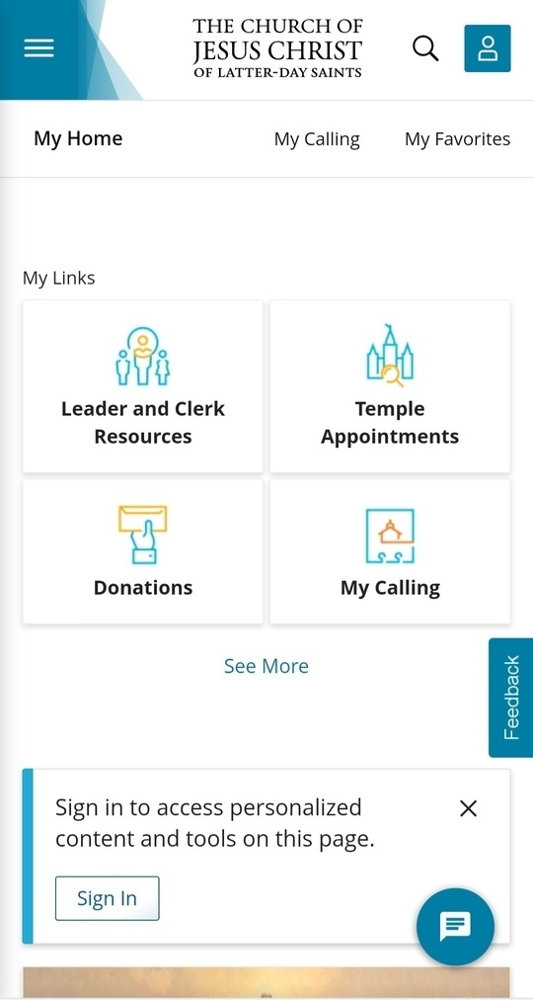

Visual Hiarachy
Netflix
Netflix home page is a good example to show the use of visual hiarachy to aid the visitors of the page to make decisions quickly . The first thing you'll read when looking at this image is "Unlimited movies, TV shows, and more." Then you'll read the next line, and then the next before you explore the other elements on the page.
The “Unlimited movies, TV shows, and more” is displayed as the most essential part of the message, which makes sense, because that is Netflix’s main selling point.
Rule of Thirds
Flipkart
The banner image follows the "Rule of Thirds", the focal point (the laptop picture) is off to the right and the text (another focal point) is off to the left.
The alignment of pictures and text in this manner facilitates the visual perception of the image's focal point and enhances legibility of the accompanying text. This likely explains the deliberate placement of both elements on the page.
White Space & Clean Design
Church of Jesus christ
This page demonistrates the use of a good amount of white space around navigation menus and other items in the in the main section. This good use of space makes it a clean design making it easier to read and improve attention.
The clean design makes the items to become distinct with enough negative space arounf them.